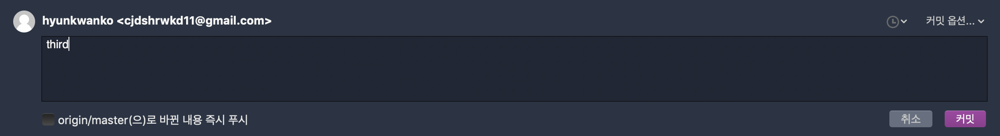
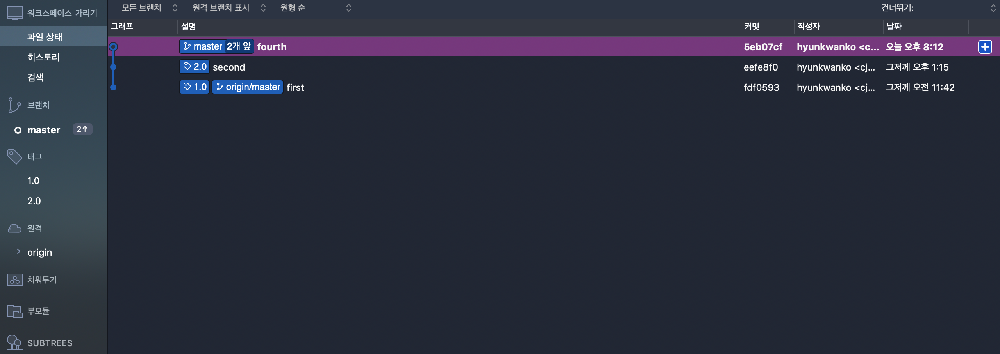

<!DOCTYPE html>
<html>
    <head>
        <meta charset="utf-8">
        <meta name="viewport" content="width=device-width, initial-scale=1.0, shrink-to-fit=no">
        <title>Everyolo</title>

        <link rel="stylesheet" href="../../static/css/bootstrap.min.css">
        <link rel="stylesheet" href="../../static/css/particles.css">
        <link rel="stylesheet" href="../../static/css/fakeLoader.css">
        <link rel="stylesheet" href="../../static/css/Footer-Dark.css">
        <link rel="stylesheet" href="../../static/css/semantic.min.css">
        <link rel="stylesheet" href="https://use.fontawesome.com/releases/v5.8.1/css/all.css">
        <link href="https://fonts.googleapis.com/css?family=Saira" rel="stylesheet">
    </head>

    <div id="particles-js"></div>

    <body id="page-top">
        <div class="fakeLoader"></div>

        <nav class="navbar navbar-light navbar-expand-md navbar navbar-expand-lg fixed-top" id="mainNav">
            <link rel="html-import" href="../nav.html">
        </nav>

        <link rel="html-import" href="../header.html">
        
        <div id="about" class="container-fluid text-center">
            <div class="row">
                <div class="col-sm-2"></div>        
                <div class="col-sm-7" style="margin: 30px 0;"><p style="font-size:3em; font-family: 'Saira', sans-serif;">[SourceTree] git tag</p></div>        
                <div class="col-sm-3"></div>
            </div>
        </div>

        <div class="container-fluid text-center" style="padding-bottom:50px;">                      
            <div class="row">
                <div class="col-sm-2"></div>        
                <div class="col-sm-7 border-right border-left">
                    <div class="ui form">
                        <div class="ui message">
                            <div class="header">Computer Environment</div>
                            <ul class="list">
                                <li>Mac OS Mojave 10.14.4 </li>
                                <li>Git 2.20.1</li>
                                <li>Sourcetree 3.1.2</li>
                                <li>April 9, 2019 Posted</li>
                            </ul>
                        </div>
                    </div>

                    <br><div class="ui floating message"><p><code><b>git commit -amend</b> : 최종 Commit 취소, 새로운 내용 추가 Commit</p></code></div><br>

                    <div class="shadow p-3 mb-5 bg-white rounded" style="color:#000"><i class="fas fa-square"></i>&emsp;Sourcetree 실행 시 첫 화면</div>
                    <div class="row"></div><br><br>

                    <div class="shadow p-3 mb-5 bg-white rounded" style="color:#000"><i class="fas fa-square"></i>&emsp;현재 디렉토리의 Commit 상태 확인<br><i class="fas fa-square"></i>&emsp;왼쪽 상단에 '커밋' 버튼 클릭</div>
                    <div class="row"></div><br><br>

                    <div class="shadow p-3 mb-5 bg-white rounded" style="color:#000"><i class="fas fa-square"></i>&emsp;오른쪽 하단에 '커밋 옵션' dropdown 버튼 클릭<br><i class="fas fa-square"></i>&emsp;'마지막 커밋 수정' 클릭</div>
                    <div class="row"></div><br><br>

                    <div class="shadow p-3 mb-5 bg-white rounded" style="color:#000"><i class="fas fa-square"></i>&emsp;현재 Commit 메시지를 확인</div>
                    <div class="row"></div><br><br>

                    <div class="shadow p-3 mb-5 bg-white rounded" style="color:#000"><i class="fas fa-square"></i>&emsp;Commit 메시지 수정</div>
                    <div class="row"></div><br><br>

                    <div class="shadow p-3 mb-5 bg-white rounded" style="color:#000"><i class="fas fa-square"></i>&emsp;변경된 Commit 메시지를 확인</div>
                    <div class="row"></div><br><br>

                    <div class="ui form">
                        <div class="ui message">
                            <div class="header" style="text-align:left">References</div><br>
                            <ul class="list">
                                <li>국립 부경대학교 IT융합응용공학과 윤요섭 교수님&emsp;<i class="fas fa-chevron-right"></i>&emsp;오픈소스소프트웨어 강의 中</li>
                            </ul>
                        </div>
                    </div>
                </div>
                <div class="col-sm-3">
                    <link rel="html-import" href="../menu.html">
                </div>
            </div>
        </div>

        <link rel="html-import" href="../footer.html">

        <script src="../../static/js/jquery.min.js"></script>
        <script src="../../static/js/bootstrap.min.js"></script>
        <script src="https://cdnjs.cloudflare.com/ajax/libs/jquery-easing/1.4.1/jquery.easing.min.js"></script>
        <script src="../../static/js/particles.js"></script>
        <script src="../../static/js/app.js"></script>
        <script src="../../static/js/fakeLoader.min.js"></script>
        <script src="../../static/js/semantic.min.js"></script>
        <script id="dsq-count-scr" src="//everyolo.disqus.com/count.js" async></script>
        <script async src="../../static/js/html-import.js"></script>
        <script src="../../static/js/grayscale.js"></script>
        <script src="../../static/js/sourcetree.js"></script>
    </body>
</html>